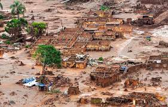
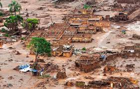

Desastres Naturais
.jpg)
.jpg)
.jpg)
.jpg)
Desastres ambientais são eventos que afetam negativamente uma sociedade ou ecossistema em algum nível. ... Esses eventos não podem ser evitados pelo homem porque são provocados pela natureza, ou seja, são desastres naturais que fazem parte do funcionamento do planeta terra
Saiba mais
Um desastre natural ocorre quando um evento físico muito perigoso provoca diretamente ou indiretamente danos à propriedade, ou faz um grande número de vítimas, ou ambas. Em áreas onde não há nenhuma presença humana, os fenômenos naturais são chamados de eventos naturais Existem diversos tipos de fenômenos naturais, eles configuram eventos normais, são gerados pela movimentação, seja de terra, de ar, de água, do cosmos… Porém esses eventos quando interferem na nossa estrutura vital, aquilo que consideramos essencial para à vida humana, então os chamamos desastres e por não haver responsáveis
Alguns exemplos comuns são ciclones, dilúvios, deslizamentos de terra, endemias, epidemias, pandemias, erosão, erupção vulcânica, ciclone tropical, incêndios (quando não causados por ação humana), inundação, queda de meteoro, tempestades, tsunamis e terremotos Recentemente, acompanhamos estarrecidos alguns desses fenômenos acontecerem no nosso globo. Em 2004, um terremoto submarino causou ondas de 30 metros de altura, resultando num tsunami de grandes proporções. O caso aconteceu na região de Sumatra, perto da Indonésia e ao final se perderam cerca de 430 mil vidas humanas, além do prejuízo material. No Japão o número foi menor mas também bastante expressivo, num tsunami que matou cerca de 30 mil pessoas, destruindo carros, barcos, plantações e vidas inteiras, além de danificar uma usina nuclear, despejando radiação no meio ambiente. Furacões também foram registrados nos últimos anos, batizados como Sandy e Katrina, causaram morte e destruição na região do Caribe e Estados Unidos. O Brasil, por sua localização, a distância que se encontra das divisões das placas tectônicas, felizmente não é alvo de muitas ocorrências naturais, porém por aqui os extremos de chuvas e de secas são causas de muitos problemas sociais, que poderiam ser evitados com uma habitação mais coerente. De qualquer forma não podemos estar tão seguros de que aqui jamais viveremos algum desastre de alta magnitude. Eles são imprevisíveis.
1.Tirar proveito das novas tecnologias para avaliação de riscos: estudos científicos podem permitir estabelecer padrões de segurança em áreas de risco.
2.Multidimensionalidade da vulnerabilidade e das respostas: o desenvolvimento urbano e territorial deve ser incorporado à gestão de riscos. O mapeamento de vulnerabilidades pode contribuir para uma maior compreensão do risco e para identificar áreas que requerem atenção especial.
3.Reforçar as redes de aprendizagem: as redes de troca de experiências, boas e ruins, entre as cidades ajudam na tomada de decisões mais acertadas.
4.Planejamento para momentos de incerteza: uma estratégia de gestão de riscos deve ser capaz de se adaptar, acomodando seus requisitos e suas especificações a diferentes casos, circunstâncias e atores. A gestão de riscos requer cooperação e adaptação para garantir a viabilidade das estratégias e sua sustentabilidade ao longo do tempo.
5.Pensar com originalidade: dado o contexto cada vez mais imprevisível, as cidades estão recorrendo a estratégias criativas e não convencionais para a gestão de riscos.
6.Os limites ecológicos não obedecem a jurisdições administrativas: muitas fontes de risco ambiental extrapolam os limites administrativos urbanos, de modo que as estratégias de gestão de risco não devem se concentrar exclusivamente no que acontece dentro das fronteiras da cidade.
7.O uso de sistemas de alerta precoce pode salvar vidas: sistemas de alerta precoce podem prevenir a perda de vidas e propriedades, se forem ajustados para responder a diferentes tipos de ameaças e se os cidadãos os conhecerem bem.
8.As infraestruturas devem ser modernizadas: o investimento em infraestruturas não termina com sua implementação, mas exige controle e manutenção de qualidade constantes. Ignorar a condição da infraestrutura exacerba os riscos naturais.
9.Envolver atores dentro e fora do governo: o risco não pode ser tratado por uma única agência e não deve ser uma abordagem baseada unicamente em uma resposta setorial. Na verdade, a gestão de risco deve estar integrada em todos os componentes da administração urbana.
1. Acidente com Césio-137 (Goiânia, 1987) Em 13 de setembro de 1987, um dos maiores acidentes nucleares da história teve início quando dois catadores de ferro-velho recolheram um aparelho de radioterapia que encontraram em uma clínica desativada.Contendo material altamente radioativo, o equipamento provocou a morte de 4 pessoas que tiveram contato direto com o mesmo, dentre elas uma menina de 6 anos.Muitas pessoas foram contaminadas, sendo que após o acidente, mais de 100 mil passaram a ser monitoradas.
2. Vazamento de óleo na Baía de Guanabara (Rio de Janeiro, 2000) No dia 18 de janeiro de 2000, um vazamento causado pelo rompimento de um duto da Petrobras contaminou grande parte do ecossistema da Baía de Guanabara. Cerca de 1,3 milhões de litros de óleo se espalhou por uma extensão de 40 km² e provocou um dos maiores acidentes ambientais da história do País. A atividade pesqueira foi fortemente prejudicada.
3. Rompimento da barragem em Mariana (Minas Gerais, 2015) Em 5 de novembro de 2015, Minas Gerais presenciou o rompimento de uma barragem da mineradora Samarco. Nesse desastre, foram despejados cerca de 60 milhões de metros cúbicos de rejeitos de mineração, que são os resíduos provenientes da atividade mineradora.Além de 19 mortos e vários desabrigados, a tragédia afetou o solo tornando-o infértil, poluiu as águas e prejudicou fortemente o ecossistema aquático.
4. Rompimento da barragem em Brumadinho (Minas Gerais, 2019) No dia 25 de janeiro de 2019, Minas voltou a ser cenário de mais uma tragédia ambiental. Desta vez, 14 milhões de metros cúbicos de rejeitos de mineração da mineradora Vale fez 252 vítimas mortais, além do que contaminou a água e o solo.
5. Vazamento de óleo do petroleiro Tarik Iba Ziyad na Baía de Guanabara (1975) Local: Baía de Guanabara, no estado do Rio de Janeiro Data: março de 1975 Quantidade: 6 mil toneladas de crude (óleo) O maior acidente de vazamento de óleo no Brasil aconteceu em meados dos anos 70 pelo petroleiro Tarik Iba Ziyad, que estava sendo fretado pela Petrobras. Isso aconteceu, pois, o casco do navio foi rompido em frente a enseada do Botafogo, próximo à ilha do Governador. O resultado foi uma mancha de 10 centímetros de espessura que surgiu em alguns pontos da Baía de Guanabara. Por conta do acidente, alguns locais também incendiaram.
6. Vale da Morte em Cubatão (1980) Local: Cubatão, interior do estado de São Paulo Data: ano de 1980 Causa: liberação de gases tóxicos pelas indústrias do polo petroquímico de Cubatão Na década de 80, a cidade de Cubatão, no interior de São Paulo, foi considerada uma das mais poluídas do país e o município mais poluído do mundo, segundo dados da ONU. O aumento de problemas de saúde da população, sobretudo associada ao sistema respiratório, e o número de mortalidade passou a ser um dos mais significativos do país.
7. Incêndio no Pantanal (2020) Entre julho e outubro de 2020, cerca de 28% do Pantanal foi consumido por incêndios. Segundo o Laboratório de Aplicações de Satélites Ambientais (LASA), uma área de 4,2 milhões de hectares foi queimada no bioma, o que é equivalente a mais de sete vezes o tamanho do Distrito Federal. O Instituto Nacional de Pesquisas Espaciais (Inpe) contou quase 22 mil focos de incêndio na região durante o ano passado. Foi o maior número registrado desde o início do monitoramento no bioma em 1998. A antiga máxima de focos de fogo na região aconteceu em 2005, quando houve 12.486 pontos de queimada no Pantanal. Pouco menos de 500 espécies de aves e 132 espécies de mamíferos habitam o Pantanal. Em Poconé, no Mato Grosso, o Parque Estadual Encontro das Águas, considerado um dos maiores refúgios de onças-pintadas do mundo, perdeu cerca de 85% de sua área.
1. Bomba de Hiroshima (Japão, 1945) No dia 6 de agosto de 1945, a primeira bomba atômica da história foi lançada pelos Estados Unidos ao Japão. A cidade de Hiroshima foi destruída e cerca de 140 milpessoas morreram. Além das mortes provocadas no momento da explosão, ainda outras milhares de pessoas morreram, ou ficaram feridas e cegas, em decorrência da contaminação da água e do solo.
2. A Névoa Matadora, Big Smoke (Londres, 1952) Entre os dias 5 e 9 de dezembro de 1952, a poluição do ar tomou conta de Londres matando milhares de pessoas. Motivados pelo frio, os londrinos queimaram muito carvão para se aquecer, uma situação que tomou proporções incontroláveis em decorrência da qualidade do carvão utilizado, já que o carvão bom era exportado. Foi a primeira vez que uma tragédia ambiental provocou a reflexão sobre a poluição do ar nas autoridades de saúde.
3. Acidente de Chernobyl (Ucrânia, 1986) Em 26 de abril de 1986, o maior acidente nuclear da história fez vários mortos e colocou milhares de pessoas em risco após a explosão de um reator.A tragédia acabou com as possibilidades de cultivo naquela região e provocou mutações genéticas em animais. Por conta dos riscos, milhares pessoas tiveram de ser deslocadas da cidade, que se transformou em atração turística. Estima-se que o local apresente riscos de contaminação durantes os próximos 20 mil anos
4. Ciclone Idai (Moçambique, 2019) Na noite do dia 14 para 15 de março de 2019, o ciclone tropical Idai provocou uma tempestade que deixou 500 mortos em Moçambique.A água contaminada provocou a cólera, além do que as inundações acabaram com os meios de subsistência dos habitantes.
5. Bomba de Hiroshima e Nagasaki (Japão, em 1945) Durante a Segunda Guerra Mundial, os Estados Unidos, pela primeira vez, utilizou bombas atômicas para atacar as cidades japonesas de Hiroshima e Nagasaki com o objetivo de forçar o Japão a se render. A gravidade foi tanta, que no raio de um quilômetro da parte central da explosão, praticamente todos os animais e plantas foram exterminados e a morte de muitas pessoas. Já se passaram quase 60 anos e a radiação ainda causa efeitos nocivos para a vida de muitos japoneses.
Causas e consequências dos desastres ambientais Principais causas: Despreocupação com o meio ambiente; Desmatamento; Metas econômicas. Bastantes desastres ambientais decorrem da falta de zelo com o meio ambiente. As tragédias provocadas por ação humana muitas vezes resultam de objetivos econômicos, quando o lucro sobrepõe a preocupação com os cuidados ambientais. Principais consequências: Problemas de saúde e sanitários; Desestabilização da fauna e da flora; Deslocação de pessoas; Pessoas desabrigadas; Prejuízo econômico. Como consequência dos desastres ambientais, a saúde e a segurança das pessoas são abaladas, porque a poluição da água e do ar resulta em doenças. Em alguns casos, a situação catastrófica não deixa outra alternativa a não ser o abandono da região vitimizada pelo desastre, como aconteceu no acidente de Chernobyl. No entanto, embora os desastres ambientais possam ser causados por objetivos econômicos, muito dinheiro acaba sendo gasto na tentativa de restabelecimento das condições de vida após um desastre. É o que acontece quando há necessidade de construir casas após terremotos, ou quando há prejuízos no setor turístico em função das manchas de óleo que atingem as praias, o que acaba gerando desemprego.
Desastres naturais: a importância da prevenção e da gestão de riscos É possível evitar os efeitos trágicos de desastres naturais decorrentes das chuvas, mas para isso, são necessários planos de prevenção e de gestão de riscos, além da intensificação da fiscalização. A afirmação pode até parecer óbvia, no entanto, faz muito sentido, quando os brasileiros ainda tentam se recuperar do choque provocado pelos deslizamentos ocorridos na serra fluminense, no mês de janeiro. Até agora, foram registrados cerca de 900 mortos e mais de 400 desaparecidos. Por outro lado, regiões metropolitanas, como a de São Paulo – entra verão, sai verão -, viram manchete por conta das enchentes. O que fazer diante desse quadro? Para especialistas reunidos na Fecomercio, recentemente, a solução passa principalmente pela mudança de cultura nos processos de urbanização no país. Os efeitos das mudanças climáticas foram apresentadas pelo físico José Goldemberg, presidente do Conselho de Sustentabilidade da Fecomercio, como um fator relevante a ser considerado, no contexto dos incidentes decorrentes das chuvas. “O clima é variável. A Ciência nos diz que a atmosfera está esquentando. Ela é composta por 78,10% de nitrogênio e um pouco mais de 20% de oxigênio, mas a questão está nos 1% restantes. A vida seria impossível na Terra, se não houvesse o colchão formado por esses gases em pequena porcentagem, como o CO2 (0,04%), produzido principalmente pelo combustível fóssil. No entanto, ele deixa a luz entrar, mas não a deixa sair, pois não é um bom condutor térmico”, diz. Para Goldemberg, no caso específico de São Paulo, a explicação para o aumento dos eventos climáticos, está na formação das nuvens sobre os oceanos, que chegam ao planalto e acarretam as chuvas. “Como a temperatura do mar está aumentando, existe maior quantidade de vapor. São Paulo ao ser uma selva de pedra, com asfaltamento excessivo, apresenta maior temperatura. Em condições normais, as nuvens passariam e não haveria a intensidade das precipitações”. Quanto à serra fluminense, ele comenta que a grande quantidade de chuva está relacionada às correntes provenientes da região amazônica.
.jpg)
.jpg) 

.jpg)
.jpg)
.jpg)